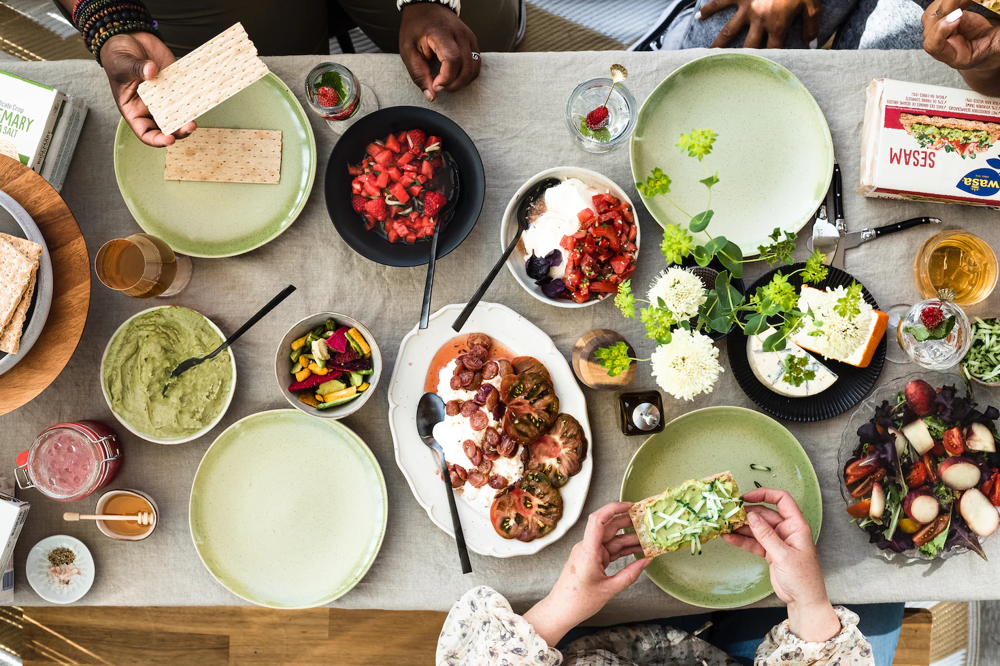
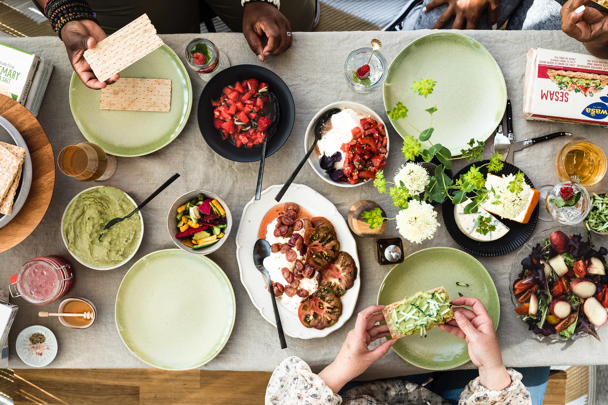

My favorite movies is called "Queen adn Slim". The movies is a 2019 American romantic adn crime drama file. The files story centers on a young couple that fall in love. this is a link for more information
Here's some movie information: Wikipedia's Queen and Slim .
This is the Wikipedia page .
My favorite artiest is The Weeknd . his name is Abel Mekkonen Tesfaye known professionally as the weeknd is canadian singer adn songwiter, actor adn record producer
This is the Wikipedia page .
There are a lot of place that you can find this Dish such as Doro Wat, Tibs, and Kitfo with Aybe can be founded at Fasika Ethipian Restaurant .
Egg Cheese burger and salad can be founded at Highlandgrill
This is What Doro Wat look like
 


| Ethiopian Dishes | Price for 1 Person | Price for 1 Person |
|---|---|---|
| Tibs | $25 | $38 |
| Doro Wat | $25 | $38 |
| Kitfo | $30 | $25 |
| Shiro | $20 | $35 |
| Salad | $15 | $28 |
| Cabbage | $15 | $28 |
| Yemisr Wat | $17 | $30 |
| Bozen Wat | $17 | $30 |
Ethiopian dish or cusine characteristically consist od vegetable and often very spicy meant dishes. There usually in the form of wat, a thick stew, served on top of injera, a large sourdough flatbread, which is about 50 centimeters in diameter and made out of fermented teff flour. Ethiopians eat most of the time with their right hands, using pieces of injera to pick up bites of entrées and side dishes. For more Information ETHIOPIAN DISHES >